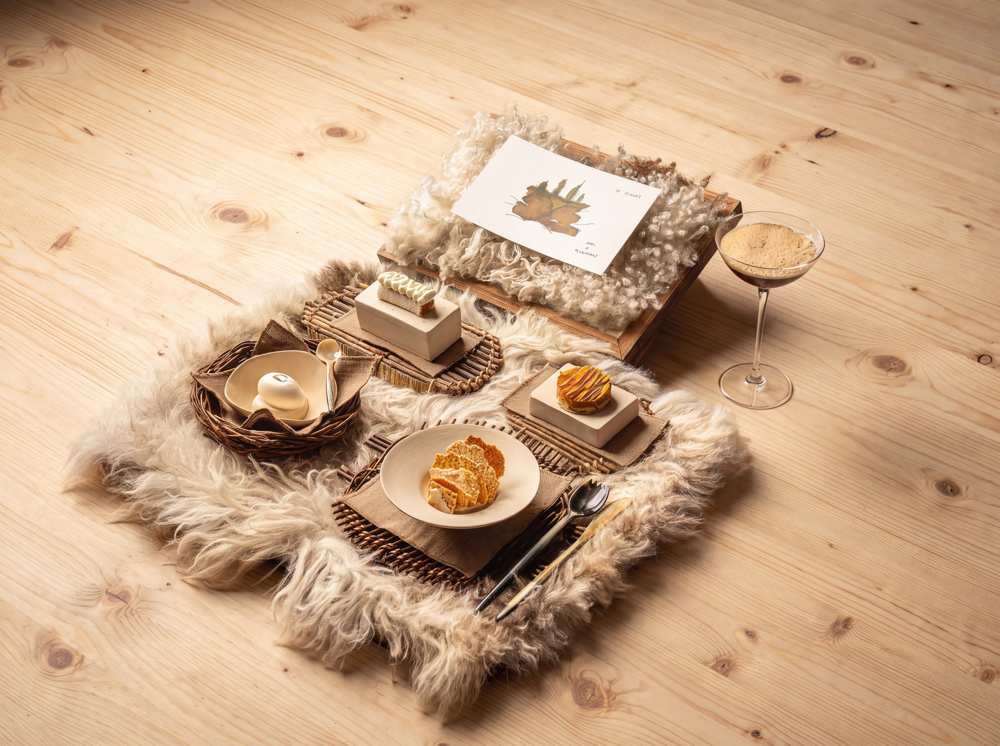
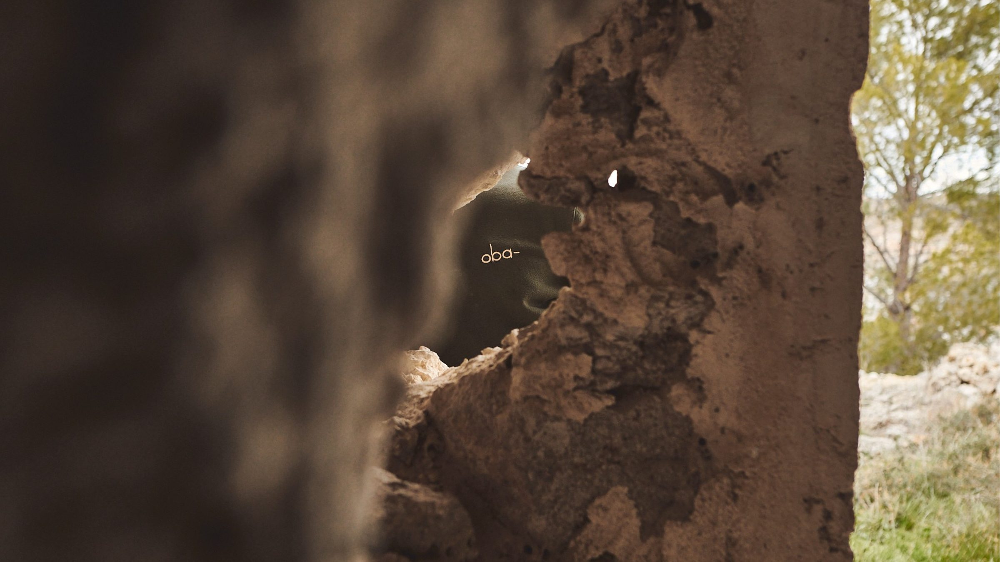
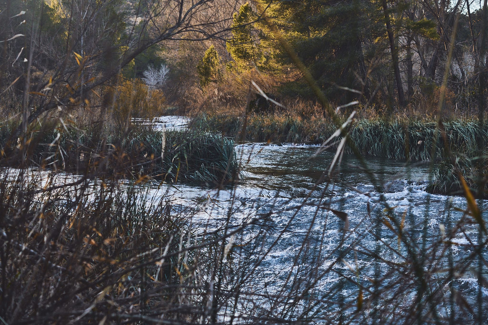

COCINA CON RAÍZ
Oba-, que en bonifaciano significa raíz, es la cocina que Javier Sanz y Juan Sahuquillo sueñan con llevar al mundo desde Casas-Ibáñez, su pueblo natal.
Cañitas Maite, el negocio familiar que los vio crecer, es la raíz de la que nace Oba-: un espacio de solo cuatro mesas donde cada plato se cuenta a través de un cuaderno inspirado en las tradiciones y la técnica de nuestra tierra.




PRENSA
Guía MICHELIN
1 Estrella Michelin y Estrella Verde — Javier Sanz & Juan Sahuquillo
Guía Repsol
2 Soles Repsol
OAD — Opinionated About Dining
2º Mejor Apertura de Restaurante Europeo
Casa Real de España — Menú servido a S.M. el Rey Felipe VI
Info: info@oba-restaurante.com
Reservas: +34 604 962 117
Prensa: prensa@oba-restaurante.com